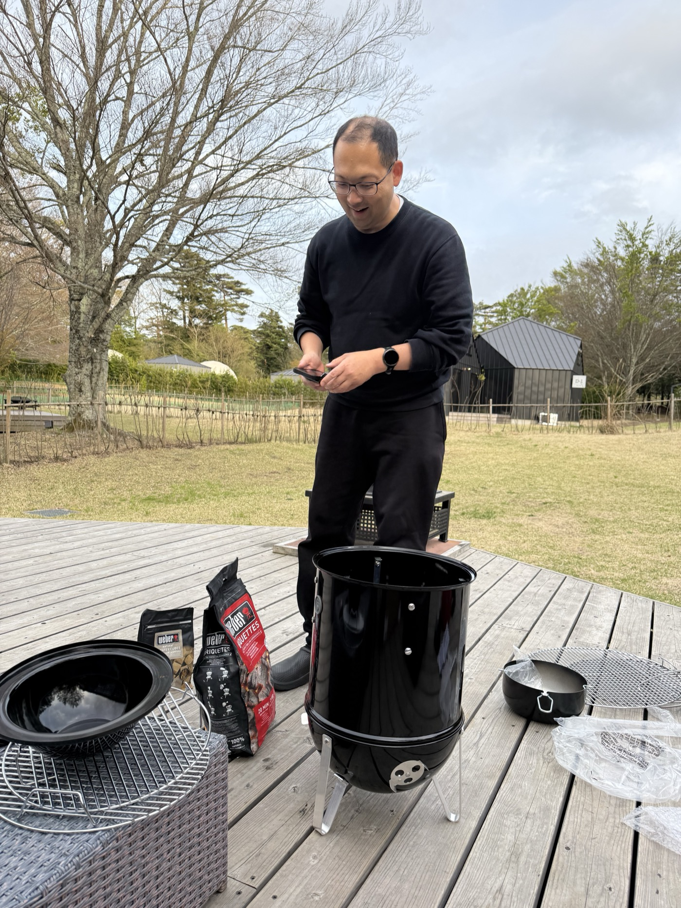

THE STORY — これまでと、これから
一度の食卓から、ここまで来た。
CHAPTER 1「美味しい」を超えた何かに、出会ってしまった。
山根と植田は、この40年、食べることが大好きで、さまざまな美味しいご飯を堪能してきました。それでも、あんちゃんのバーベキューを口にしたときの感覚は、これまでの中でいちばん——というよりは、「美味しい」という言葉を超えた、幸せ、あるいはそれすら超えた何か、としか言いようのないものでした。
気がつくと、いつもの自分とは少し違う世界に入っているような、そんな感覚すらあった。蓋を閉めた炭のグリル。丁寧な下味。低温でゆっくり、じっくり通していく火。普通の食材が、異常に美味しくなる——この体験が、すべての始まりです。
CHAPTER 2 — 2025.12〜2026.4感動を、再現できる技術に変える。
感動しただけでは、火は広がらない。3人はWeber Grill Academyに通い、初級（2025年12月）→中級（2026年1月）→上級（2026年4月）を修了しました。火の配置設計、中心温度の科学、コラーゲンがゼラチン化する80℃の壁、杉板・ラック・シールドの使い分け——毎回の受講と週末の実践を、ぜんぶノートに記録しながら。
スペアリブがうまくいった日も、ラブたっぷりの鶏を焦がした日も、ピザストーンで失敗した日もありました。その記録の全部が、いまYORON BBQ ACADEMYとして公開されています。

CHAPTER 3 — 2026.5.31531。はじめて、人を招いた日。
2026年5月31日、新木場。友人招待制のバーベキュー会「531」を開きました。朝の光がいい時間に火を入れて、夕方まで。多くを語らず、その場で受け取ってもらう——という趣旨の会です。
参加してくれた方々の反応が、3人の確信を深めました。「焼かない。蒸す感じ」「普通のバーベキューと真逆」「ずっと食べていられる」「健康志向」。この日をきっかけに、531は数ヶ月に一度の定期開催になり、月に一度のオープンな月1BBQも始まりました。
CHAPTER 4 — 気づきアメリカンBBQは、なぜ日本に根づかないのか。
広げようとするほど、ひとつの問いにぶつかりました。アメリカンBBQは10年、20年前から日本に入ってきているのに、なぜ浸透しないのか。答えは「認知が足りない」でも「インフルエンサーがいない」でもなく、構造とカルチャーにありました。
| 国 | BBQ文化 | 肉類 kg/人・年 | 魚介類 kg/人・年 | 肉÷魚介 |
|---|---|---|---|---|
| 🇺🇸 アメリカ | ★★★★★ | 120 | 22 | 約5.5倍 |
| 🇦🇺 オーストラリア | ★★★★★ | 120 | 25 | 約4.8倍 |
| 🇦🇷 アルゼンチン | ★★★★★ | 110 | 8 | 約13.8倍 |
| 🇯🇵 日本 | ★☆☆☆☆ | 47 | 46 | 約1.0倍 |
国別の年間食材消費量（1人あたり・概算）。BBQ大国はすべて圧倒的な肉食文化。日本だけが肉と魚がほぼ1:1です。
BBQが文化になった国は、どこも圧倒的な肉食の国。日本は肉と魚の消費がほぼ1対1で、少しずつ多品種を熱々で食べたい国です。12時間かけて巨大な塊肉1種を育てるスタイルは、日本の暮らしにも、BBQ場の利用時間にも、食文化にも収まらない。
アメリカンBBQを模倣して日本に浸透させるのは、ほぼ不可能。これは気合いの問題ではなく、構造の問題。——だったら、日本に最適化された新しいBBQを、僕らが定義すればいい。
焼き方はアメリカンBBQのロジック（蓋・間接熱・温度の科学）を継承しつつ、時間は暮らしに収まる長さに。食材は肉だけでなく、魚・野菜・日本各地の貴重な食材へ。むしろ、生魚の調理法をここまで磨いてきた日本だからこそ、世界のどこにもないBBQがつくれる——問いは、確信に変わりました。
CHAPTER 5 — 2026.7.16YORON BBQ、誕生。
新しい概念には、名前が要る。名前次第で浸透のスピードは5倍にも10倍にも変わる——そう考えた3人は、2026年7月16日の会議で、この日本に最適化されたバーベキューを「YORON BBQ（ヨロンバーベキュー）」と名づけました。
与論島は、あんちゃんの火のルーツであり、「飲みに行こう」と同じくらい自然に「バーベキューしよう」と言い合う土地。中国料理や台湾ラーメンがそうだったように、「地名×料理」の名前は文化として広がっていきます。「これがヨロンバーベキューだ」と、スタンスを取った者勝ち。
キャッチコピーはこう決まりました。
それは、あなたの知っている『バーベキュー』とは別の食べ物です。
——本場アメリカンBBQを、与論島から。
CHAPTER 6 — これから目指すのは、日本人の3人に1人。
僕らの目標は、日本全国民の33%がYORON BBQを味わったことがある世の中をつくること。そのためにやることは、突き詰めればふたつだけです。YORON BBQのPitmaster（焼き手）を増やすこと。BBQソムリエ（知識で語れる人）を増やすこと。1人の焼き手が5人に火を手渡し、その5人がまた5人に——このループが11巡すれば、約6,000万人に届きます。
この取り組みを続けた先に、こんな世界が広がると本気で考えています。
そして最後に、いちばん大事なこと。この物語は、あんちゃんという人間がこの世にいなければ、始まらなかったということです。その一番弟子がうえたくと山根だった——それ自体が、ふたりにとって人生の新しい目標になりました。